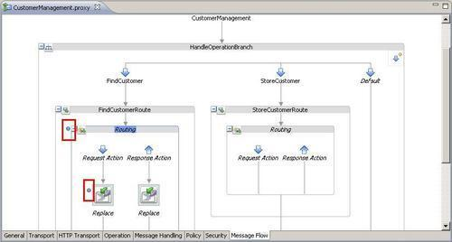
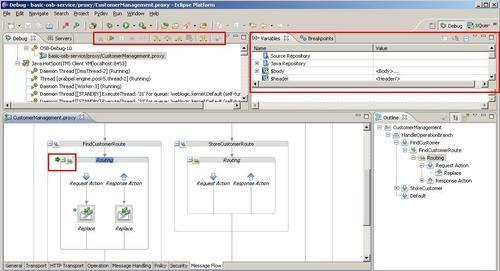
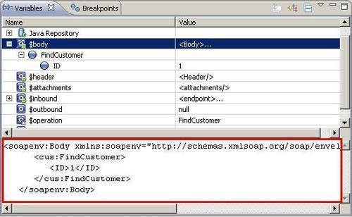

We have already seen in the Testing the proxy service through the OSB console recipe that the OSB provides an Invocation Trace when executing an OSB service through the test console. The Invocation Trace is one possible solution for debugging if something is not working as expected. But its use is limited to the test console.
This recipe will show a more developer-friendly way for debugging. We will show how to use the visual debugger available with the Eclipse OEPE.
Make sure to have the current state of the basic-osb-service project from Chapter 1, Creating a Basic OSB Service available in Eclipse OEPE. We will use it for this recipe. If necessary, it can be imported from here: \chapter-1\solution\with-transformation-proxy-service-created.
For this recipe, we also have to make sure that the OSB server runs in debug mode. The status of a server in the Servers tab in the Eclipse OEPE indicates in which mode the server is started. A value of [Debugging, ...] means in debug mode, whereas the value [Started, ...] indicates the normal mode.
In order to switch to debug mode, right-click on the server and select Restart in Debug. After a while the status will switch to [Debugging, ...] and Eclipse OEPE will automatically switch into the debug perspective.
In order to debug a proxy service, some breakpoints are needed to tell the debugger where to halt the request processing. This is important as we cannot start the message flow from within Eclipse, the trigger is always something external such as the test console or soapUI and the message flow will run until the first breakpoint is reached. In Eclipse OEPE, perform the following steps to add a breakpoint:
We have created two breakpoints in the message flow indicated by the blue dots in front of the Replace action and the Routing node, as shown in the following screenshot:

Let's see how the debugger works by executing a test. We can either use the OSB console or any other SOAP consumer (that is, soapUI) to send a request to the proxy service. The debugger will step in and halt execution at the first breakpoint.
The place where the execution is halted is indicated by the green arrow, shown in the next screenshot. We can also see the content of the variables in the upper-right window (Variables tab).

If we are interested in the content of the body variable at the given breakpoint (Routing action) we have to select the $body variable in the Variables window and the content is shown below the variable tree.

The content of the variables can also be changed.
We can continue either step-by-step by using the Step-Into, Step-Over, Step-Return actions or go forward to the next breakpoint by using the Resume action. These commands are available in the toolbar next to the Servers tab.
The debugger is only available when working with Eclipse OEPE but not in the OSB console. The look and feel is very similar to the debugging of Java code in Eclipse. So if we know how to debug Java, it's very easy to also work with the OSB debugger.
In order for the debugger to work, the OSB server needs to be in debug mode. The mode can either be changed, as shown earlier, directly from Eclipse OEPE (if a local server is used) or the OSB server can simply be started in debug mode.
If we are working and testing on a remote OSB server, then it might not always be possible to switch on debug mode. In that case, it can be handy to also know how to use and interpret the Invocation Trace of the OSB test console.